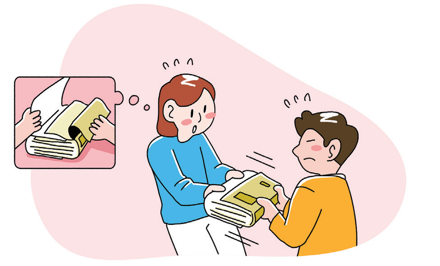
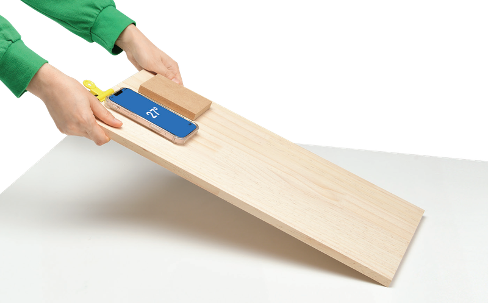
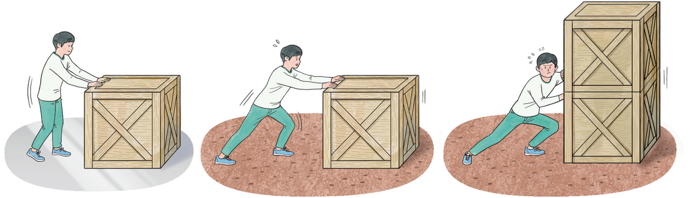
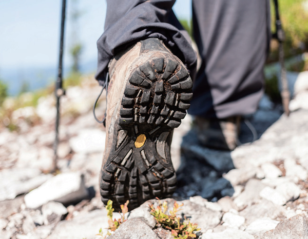
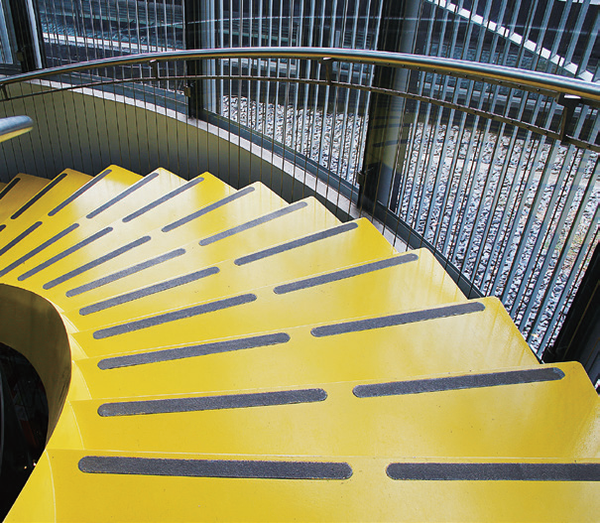
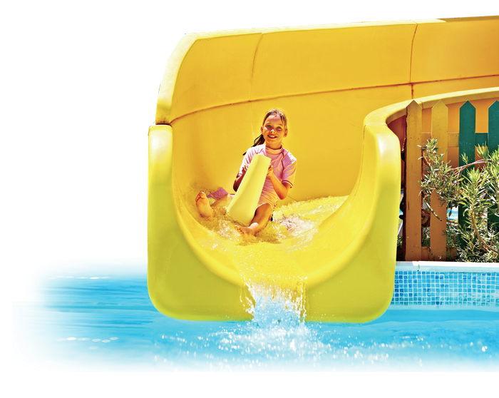

겹쳐진 책은 왜 잘 안 빠질까?
책장을 한 장씩 겹쳐 놓은 두 책은 양쪽에서 힘껏 당겨도 잘 분리되지 않아요. 두 물체가 닿는 면에서 운동을 방해하는 힘, 마찰력에 대해 알아봐요.
지난 시간에 배운 탄성력, 기억나나요?
학습 목표
교과서 168~169쪽책장이 겹쳐진 두 책이 잘 분리되지 않는 까닭은?
교과서 168쪽
책장을 서로 겹쳐 놓은 두 책을 양쪽에서 당겼더니 잘 빠지지 않는다. 책장이 서로 겹쳐진 두 책을 양쪽에서 당길 때 잘 분리되지 않는 까닭은 무엇일까?
마찰력은 어떤 특징이 있는지 알아보자.
마찰력 알아보기
교과서 168쪽🎯 물체가 미끄러지기 시작하는 빗면의 각도를 측정하여 마찰력의 크기를 비교해 보자.
🧰 준비물: 긴 나무판, 나무 도막, 사포, 스마트 기기, 집게, 투명 필름, 스마트 기기 케이스, 양면테이프

- 1나무 도막의 한쪽 면에 사포를 붙인다.
- 2경사계 애플리케이션을 실행한 스마트 기기를 긴 나무판에 고정한다.
- 3나무 도막의 사포 면을 아래로 하여 나무판 위에 올려놓고, 나무판의 기울기를 점점 크게 하면서 나무 도막이 미끄러지기 시작하는 각도를 측정해 보자.
- 4나무 도막의 나무 면을 아래로 하여 같은 방법으로 미끄러지기 시작하는 각도를 측정해 보자.
🖐️ 가상 실험: 나무판을 기울여 보자
아래쪽에 닿는 면을 고른 뒤 「천천히 기울이기」를 누르거나 슬라이더로 나무판을 기울여 보자. 나무 도막이 미끄러지기 시작하는 순간의 각도가 기록돼요.
| 아래로 놓은 면 | 사포 면 | 나무 면 |
|---|---|---|
| 미끄러지기 시작하는 각도 | ? | ? |
📝 활동 후 설명해 보기
- 1나무 도막이 미끄러지기 시작하는 각도가 더 큰 경우를 고르고, 그렇게 생각한 까닭은 무엇인지 설명해 보자.• 미끄러지는 각도가 큰 경우: 사포 면을 아래로 했을 때
• 까닭: 빗면의 기울기가 커질수록 나무 도막이 빗면을 따라 미끄러져 내려가려는 힘이 커지고 마찰력도 함께 커지므로, 마찰력이 더 큰 사포 면을 아래로 했을 때가 나무 면을 아래로 했을 때보다 나무 도막이 미끄러지기 시작하는 각도가 더 크다.
마찰력의 크기와 방향
교과서 169쪽나무 도막의 사포 면을 아래로 한 경우가 나무 면을 아래로 한 경우보다 접촉면이 거칠어서 잘 미끄러지지 않는다. 마찰력은 접촉면이 나무일 때보다 사포일 때 크게 작용하고, 나무 도막의 운동 방향과 반대 방향으로 작용한다.
그림 Ⅴ-10과 같이 물체의 무게가 같은 경우 거친 바닥에 놓인 물체를 움직이게 할 때 마찰력이 크게 작용한다. 또 바닥의 거칠기가 같은 경우 무거운 물체를 움직이게 할 때 마찰력이 크게 작용한다.

그림 Ⅴ-10 마찰력의 크기 | 마찰력의 크기는 접촉면의 거칠기와 물체의 무게에 따라 달라진다.
🔎 바닥과 무게를 바꿔 보자
작다
마찰력의 이용
교과서 169쪽우리는 일상생활에서 등산화나 계단 끝에 부착한 미끄럼 방지 테이프와 같이 마찰력을 크게 하여 미끄러지는 것을 막기도 하고, 물 미끄럼틀처럼 마찰력을 작게 하여 잘 미끄러지게 하기도 한다.

🥾 등산화 바닥
바닥을 울퉁불퉁하게 만들어 접촉면을 거칠게 하므로 미끄러운 산길에서도 잘 미끄러지지 않는다.

🪜 계단 끝 미끄럼 방지 테이프
거친 테이프를 붙여 계단에서 발이 미끄러지는 것을 막는다.

🛝 물 미끄럼틀
미끄럼틀에 물을 흘려 마찰력을 작게 하므로 잘 미끄러져 내려온다.
그림 Ⅴ-11 마찰력의 이용
⬆️ 마찰력을 크게 하는 예
- 겨울철에 눈이 쌓인 도로에 모래를 뿌린다.
- 방향을 빠르게 바꾸어야 하는 운동 경기를 할 때 마찰력이 큰 신발을 신는다.
- 눈길을 달리는 자동차 바퀴에 체인을 감는다.
⬇️ 마찰력을 작게 하는 예
- 바퀴에 베어링을 사용한다.
- 기계끼리 닿아 움직이는 부분에 윤활유를 칠한다.
- 자기 부상 열차가 공중에 뜬 상태에서 달린다.
배운 내용, 확인해 볼까요?
교과서 169쪽물체가 어떤 면에 접촉하여 운동할 때 접촉면에서 물체의 운동을 방해하는 힘을 (이)라고 한다.
마찰력은 물체의 운동 방향과 반대 방향으로 작용한다.
• 마찰력을 작게 한 경우: 자전거의 체인에 윤활유를 사용했다, 창문을 열고 닫을 때 기름칠을 했다 등
조금 더 풀어볼까요?
마찰력 연습 문제바닥의 거칠기가 같을 때, 물체가 무거울수록 마찰력이 작게 작용한다.